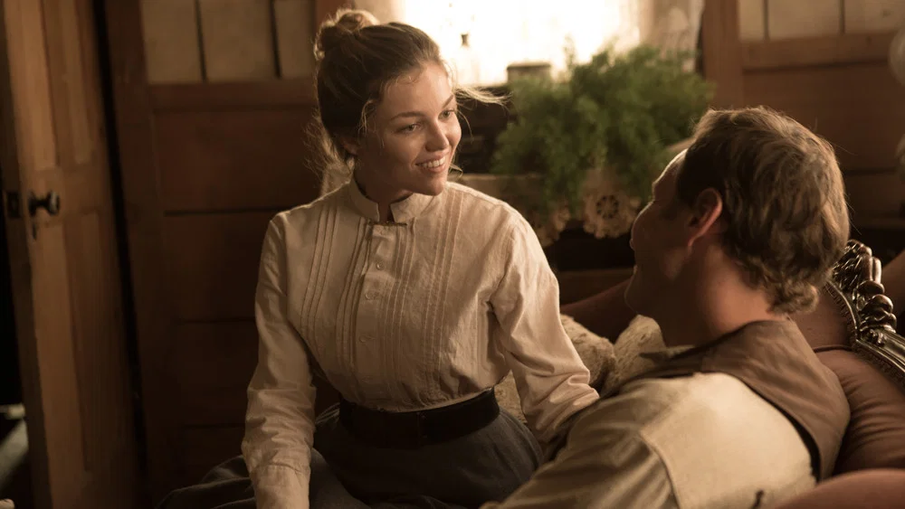

Nel 2015 Kurt Russell si è fatto crescere i baffoni. Non baffi normali: baffoni a manubrio da sceriffo del vecchio West, quelli che per mantenerli ci vuole la cera, la pazienza e una certa visione del mondo. E siccome erano già lì, belli pronti, li ha messi a disposizione di due film nello stesso anno: The Hateful Eight di Tarantino, dove faceva il cacciatore di taglie, e Bone Tomahawk, dove faceva lo sceriffo. Uno dei due aveva 44 milioni di budget, il 70mm, Ennio Morricone e tre ore e passa di dialoghi. L’altro costava meno della ristrutturazione di casa mia e aveva dei trogloditi cannibali che si fischiano dentro la gola.

S. Craig Zahler è riuscito a girare questa gemma con quattro soldi, in poche settimane, e un cast che ha accettato perché la sceneggiatura era una bomba: Kurt Russell, Patrick Wilson, Richard Jenkins, Matthew Fox. Signori professionisti. Da lì in poi Zahler ha girato Cell Block 99 e Dragged Across Concrete, e se non li avete visti fatevi un favore.
Nella cittadina di Bright Hope, una notte vengono rapiti la moglie di un cowboy, il vice-sceriffo e un prigioniero. Le tracce portano verso una tribù di cui persino gli indiani della zona parlano a bassa voce. Si parte in quattro a cercarli: lo sceriffo Hunt (Russell), il marito disperato Arthur (Wilson) con una gamba rotta, il vecchio vice di riserva Chicory (Jenkins) e Brooder (Fox), un dandy elegantissimo che ammazza indiani per hobby. Avete visto Sentieri selvaggi? Ecco. È quello. La spedizione di salvataggio, la frontiera, gli uomini bianchi convinti di portare la legge in una terra selvaggia.

Zahler prende il western più classico e lo svuota sistematicamente di ogni romanticismo. Il viaggio dura giorni, si cammina, ci si ferisce, i cavalli vengono rubati, la gamba di Arthur va in cancrena, e Patrick Wilson passa metà del film a trascinarsi su un bastone con una faccia che ti fa venire male alla tibia anche solo a guardarlo. I corpi si logorano prima ancora dello scontro. Arrivano a destinazione già mezzi morti. I dialoghi sono stilizzati, verbosi, pieni di una formalità ottocentesca e di umorismo assurdo. Che è esattamente quello che Zahler vuole.

I trogloditi. Non sono una tribù. Non sono “indiani cattivi”: sono qualcosa di totalmente altro. Non parlano. Non negoziano. Non hanno un codice. Non hanno un racconto. Comunicano attraverso fischietti d’osso piantati nella gola, un dettaglio talmente disgustoso e geniale che non ve lo dimenticherete più quando lo sentirete la prima volta nel buio. Tutto il codice d’onore dei nostri quattro eroi, di fronte a loro vale zero. Non c’è nessuno con cui fare il duello all’alba. Non c’è nessuno da convincere, da sconfiggere a parole, da far arrendere. C’è solo una brutalità che non conosce né legge né storia. E il cowboy che crede nel mito della frontiera si ritrova di fronte a un avversario davvero malvagio, senza compromessi.

Il western ha costruito per decenni un ordine morale molto comodo: da una parte il cowboy, individuo civilizzato e potenzialmente eroico, dall’altra il selvaggio da respingere. È un racconto che ha trasformato una conquista violenta e un genocidio in una serie di duelli tra uomini coraggiosi e nemici privi di legittimità. Bone Tomahawk usa proprio quel vocabolario, ma non lo ribalta con l’ideale specchio di una disputa equa: il male qui assume una forma tanto cieca da non poter essere addomesticata dalle parole, dalle trattative o dai codici del mito fondativo.
La scena arriva dopo un’ora e mezza di film quasi senza violenza: chirurgica, improvvisa e di una crudeltà che Zahler filma senza girarsi dall’altra parte.
E poi c’è LA scena. Chi l’ha vista sa di cosa parlo. Arriva dopo un’ora e mezza di film quasi senza violenza, tutto chiacchiere, cavalli e stelle, ed è chirurgica, improvvisa, e di una crudeltà che Zahler filma senza musica, senza montaggio furbo, senza girare la cinepresa dall’altra parte. Inquadratura fissa. Fine.
In conclusione: Bone Tomahawk è un western che si traveste da horror o un horror che si traveste da western, e non importa, perché funziona in entrambi i casi. È un film piccolo, ruvido, con gli attori in stato di grazia, e una delle demolizioni più crudeli del mito del cowboy che si siano viste.

— S. DL.